Feature Matching for Autostitching
An automated panorama stitching pipeline implementing the MOPS framework: from feature detection and suppression (ANMS) to descriptor matching and robust homography recovery using RANSAC.
Corners & ANMS
Detect Harris peaks and distribute features uniformly via suppression radius.
8×8 Descriptors
Sample 40×40 windows, blur, downsample to 8×8, and bias/gain normalize.
Lowe's Matching
Prune ambiguous correspondences via 1st/2nd nearest neighbor distance ratios.
4-Point RANSAC
Robustly reject outlier pairs and refine homography matrix over all inliers.
Harris Corner Detection & Adaptive Non-Maximal Suppression (ANMS)
Using a single-scale Harris corner detector produces thousands of candidate interest points. However, high-frequency textures cause these corners to cluster densely in localized patches, leaving other image areas under-represented. To ensure an even spatial distribution of keypoints across the entire canvas, we implement Adaptive Non-Maximal Suppression (ANMS) (Brown et al., Section 3).
For each corner candidate $i$, we determine the minimum Euclidean distance $r_i$ to another corner $j$ that has a significantly stronger corner response:
Using robustness constant $c_{ ext{robust}} = 0.9$, we rank all points in descending order of their suppression radius $r_i$ and select the top 500 corners. This suppresses redundant clusters while retaining strong, isolated features.
Harris Corners: Raw vs. ANMS Suppressed
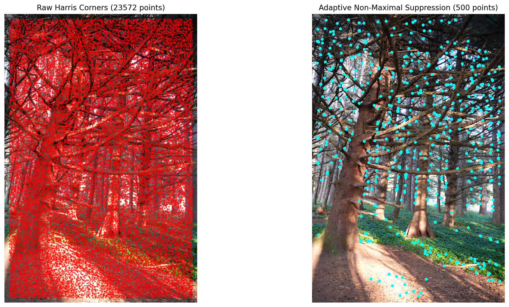
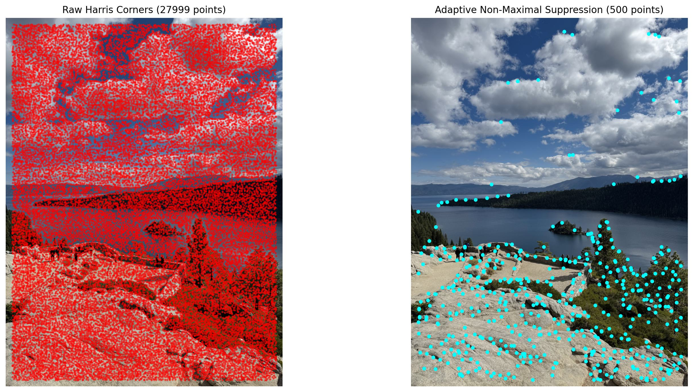
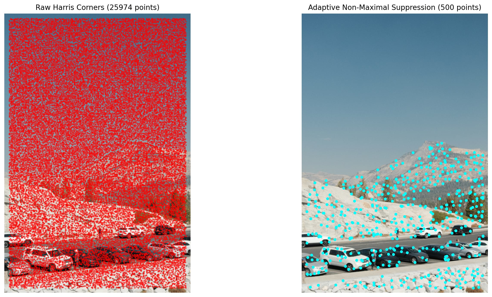
Feature Descriptor Extraction
Directly extracting raw 8x8 pixel neighborhoods captures high-frequency pixel noise and lacks structural context. Following Section 4 of the paper, we sample a larger 40x40 window centered around each ANMS feature point.
The window is low-pass filtered using a Gaussian kernel ($\sigma = 1.0$) to avoid aliasing artifacts, and sub-sampled every 5 pixels to yield an axis-aligned 8x8 descriptor. To achieve invariance against affine photometric illumination and contrast shifts, each descriptor vector is bias/gain normalized to have zero mean and unit variance:
Sample Extracted 8x8 Descriptors
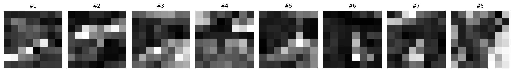
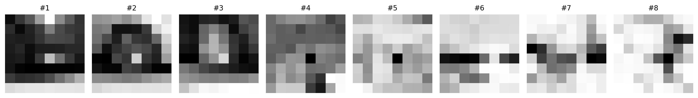
Feature Matching & Lowe's Ratio Test
For every descriptor in Image 1, we compute pairwise Euclidean distances against all descriptors in Image 2. Instead of applying a global distance threshold, which struggles when texture densities vary across scenes, we implement Lowe's ratio test comparing the distance of the nearest neighbor ($e_1$) to the second-nearest neighbor ($e_2$):
Distinctive visual features produce a low ratio because the true match is significantly closer than false matches. Ambiguous or repeating textures produce $e_1 \approx e_2$ and are filtered out.
4-Point RANSAC & Mosaic Comparison
Even with Lowe's ratio test, false correspondences can remain. We implement 4-point RANSAC (Random Sample Consensus) from scratch to estimate a robust homography $\mathbf{H}$:
- Randomly select 4 candidate correspondence pairs and solve for candidate homography $\mathbf{H}_{ ext{cand}}$.
- Transform all candidate points from Image 2: $\mathbf{p}'_i = \mathbf{H}_{ ext{cand}}\mathbf{p}_{2, i}$.
- Compute the Euclidean reprojection error: $\epsilon_i = \|\mathbf{p}_{1, i} - \mathbf{p}'_i\|_2$.
- Classify matches with $\epsilon_i < 3.0$ pixels as inliers. Repeat for $3{,}000$ iterations to find the consensus set.
- Recompute the final homography $\mathbf{H}$ using least-squares across all consensus inliers.
Feature Matches (Inliers vs. Outliers)
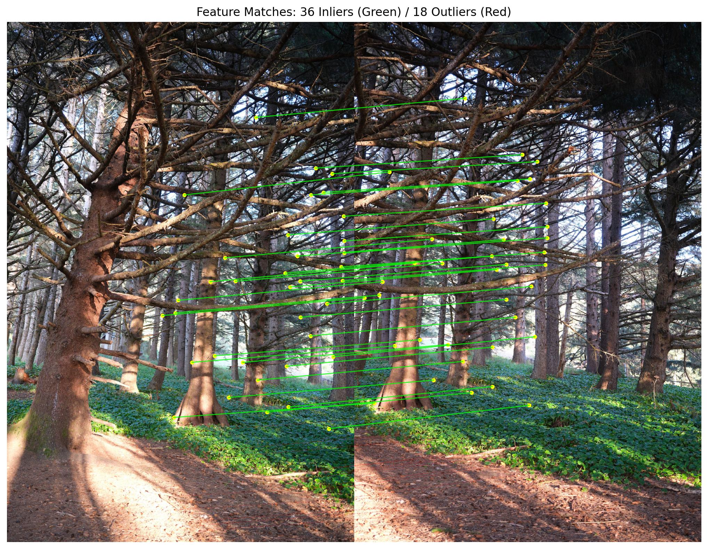
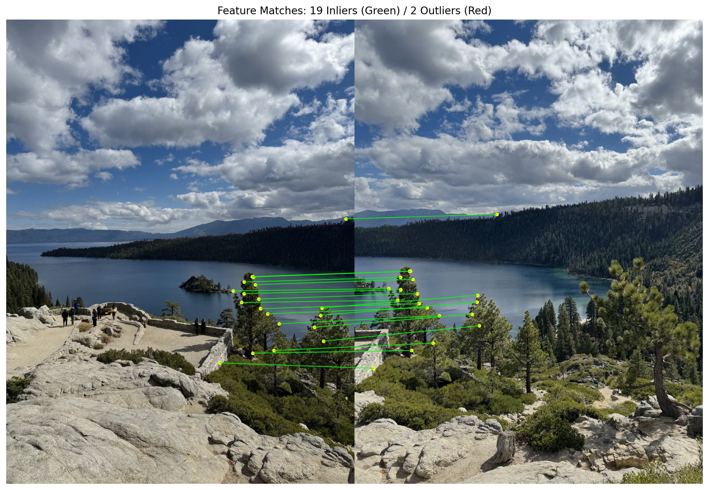
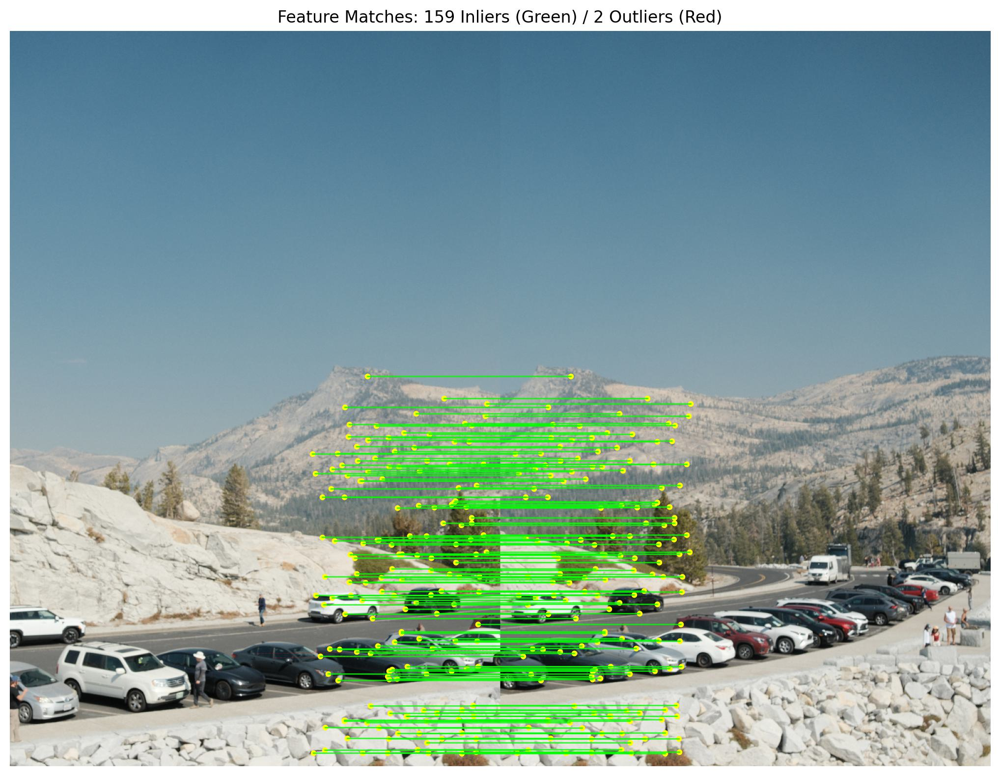
Manual vs. Automatic Stitching Comparisons
Below are side-by-side comparisons of the final mosaics stitched using Part A (manual point correspondences) versus Part B (fully automated feature detection, matching and RANSAC). Both pipelines use the identical inverse bilinear warping and distance-transform alpha feathering routines.
Mosaic 01 Comparison
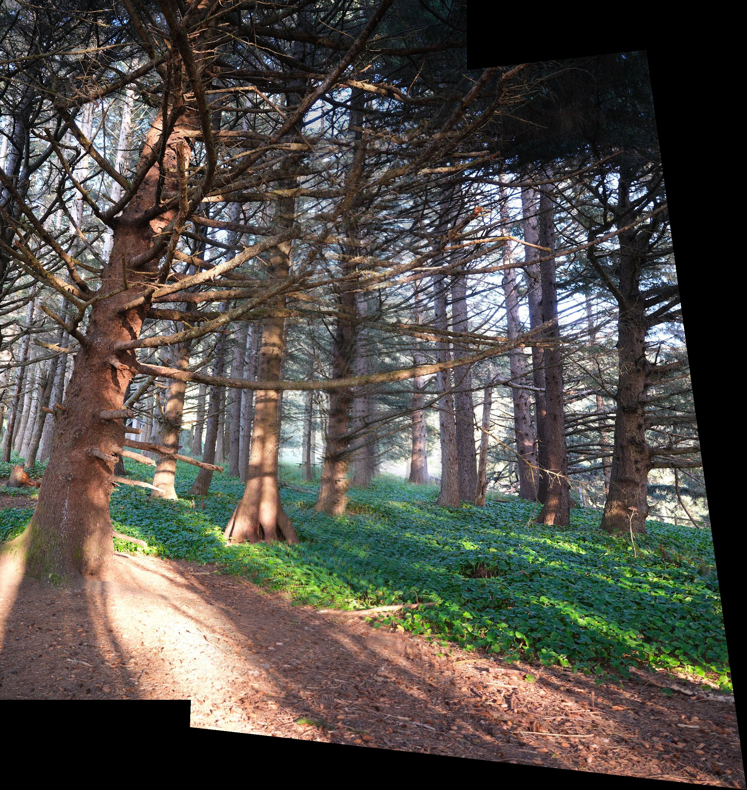
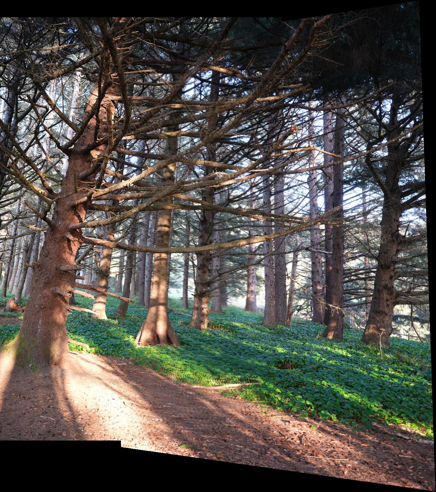
Mosaic 02 Comparison

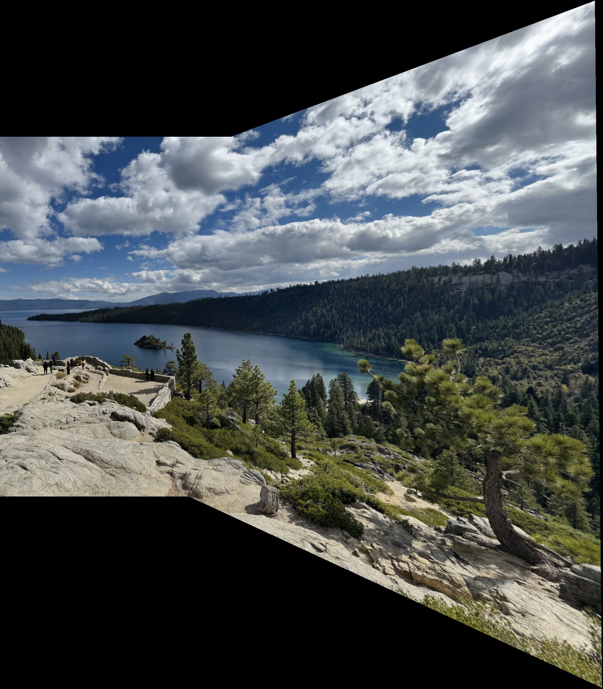
Mosaic 03 Comparison
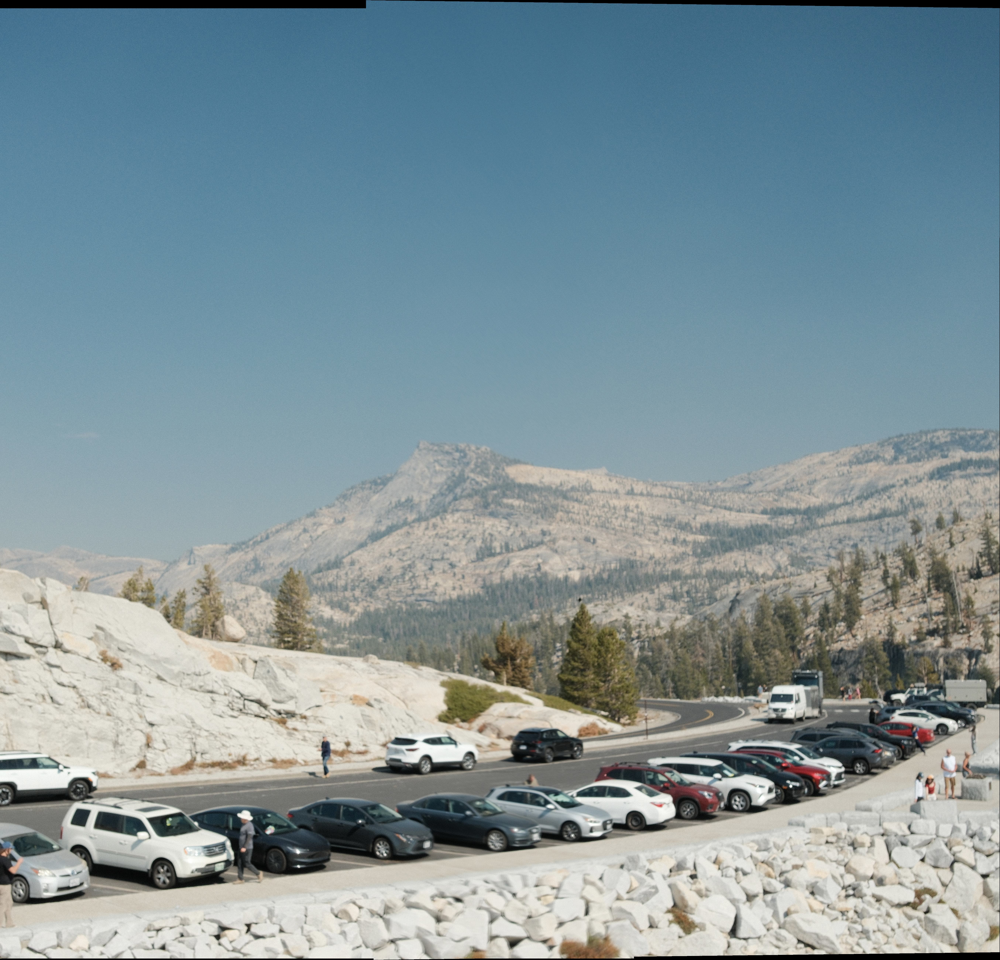
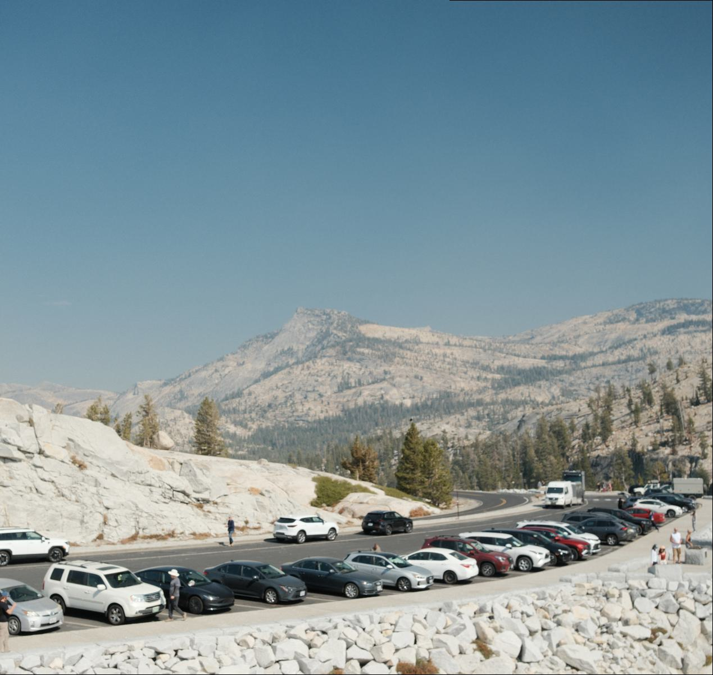
Key Takeaways
Comparing manual and automated stitching showed me how sensitive projective transformations
can be to small alignment errors. With manual clicking, even slight inaccuracies can become
more noticeable across wider baselines. This was most apparent in Mosaic 01 (Into the Forest),
where imperfect point selection introduced rotational distortion along the right border,
duplicated branches and visible ghosting around the seams. The automated MOPS pipeline,
on the other hand, found 36 consistent inliers distributed across the scene, producing a much
cleaner composite that preserved the details of the overhead canopy.
The automated approach also performed well on Mosaic 02 (By the Lake) and Mosaic 03 (Mountain Escape).
For the lake scene, it handled challenging features such as moving clouds and repetitive granite
textures, identifying 19 out of 21 matches as inliers. For the mountain ridge scene, it found an even
stronger consensus of 159 out of 161 matches (98.8%), using distinct vehicle and roadway features for
alignment.
Overall, it was interesting to see how each step, from extracting blurred 8x8 descriptor patches to
applying nearest-neighbour ratios and RANSAC, worked together to turn individual images into a coherent
panorama. What initially required careful manual effort could be handled much more reliably through
feature matching.